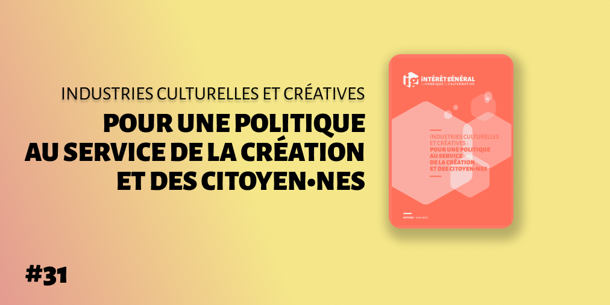
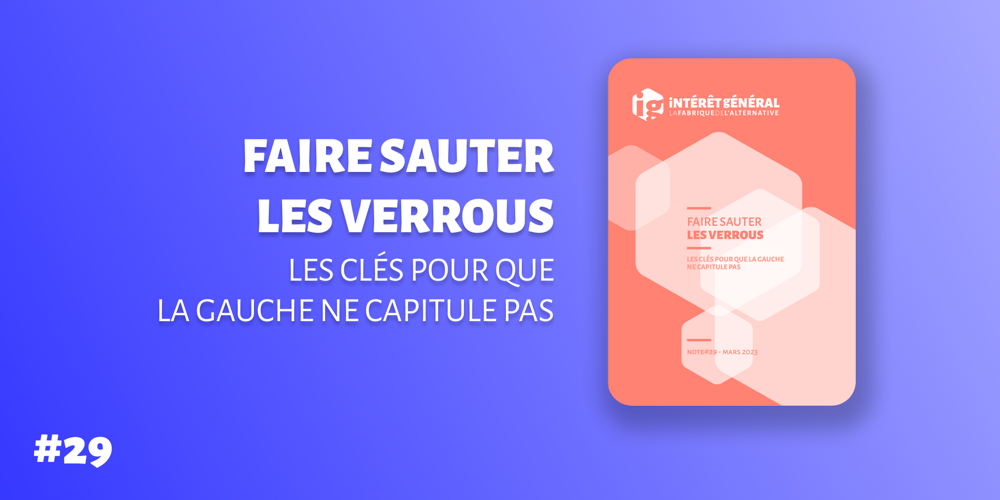

Nouvelle publication : Industries culturelles et créatives - Pour une politique au service de la création et des citoyen∙nes
 Notre note sur le syndicalisme

Notre note sur la socialisation

Nos notes consacrées à l'adaptation aux crises écologiques


Nos précédentes parutions


Le conseil

Notre manifeste

Nous sommes fonctionnaires de l’État et des collectivités territoriales, chercheur·se·s, universitaires, syndicalistes, dirigeant·s de PME et d’associations, cadres du secteur privé, ou exerçons une profession libérale ; nous considérons la conquête de la liberté de parole et d’opinion comme un combat. La faillite idéologique du macronisme et son irresponsabilité face aux urgences environnementale, sociale, internationale et démocratique nous révoltent. Lire la suite...